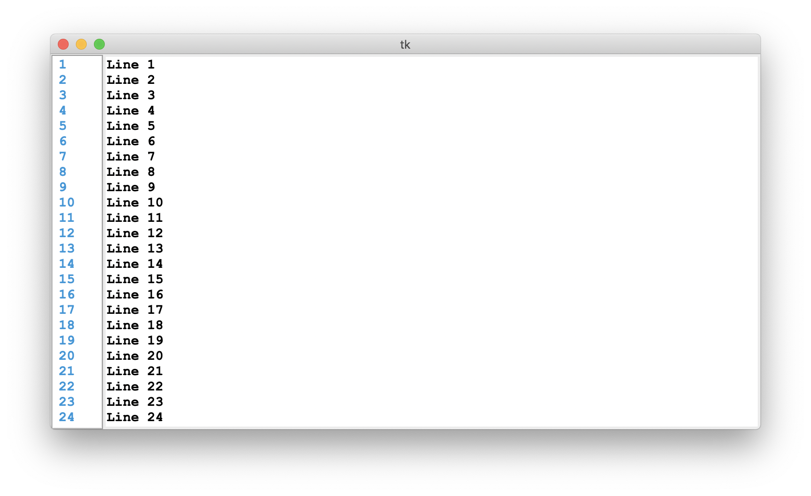

TkLineNums
TkLineNums is a simple line numbering widget for Tkinter. It supports ttk themes through the set_to_ttk_style method.

Features:
- Clicking on line numbers will set the insert to the beginning of the line.
- Clicking on line numbers will set the insert to the beginning of the line.
- Scrolling the linebar will scroll the text widget
- Supports ttk themes
- Supports left, right, and center alignment with the `justify` option